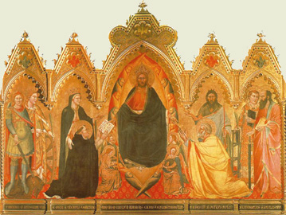

| CORPUS THOMISTICUM |
| Editio Leonina |
|  |
| |
vinculis interretialibus
notisque bibliographicis annexis |
| |
|
|
|
|
| |
Sancti Thomae de Aquino
Opera omnia iussu Leonis XIII P. M. edita |
|
| 1*, 1 |
Expositio libri Peryermenias, Editio altera retractata |
1989 |
| |
| 1*, 2 |
Expositio libri Posteriorum, Editio altera retractata |
1989 |
| |
| 1 |
In Aristotelis libros Peri hermeneias et Posteriorum analyticorum, Editio prima |
1882 |
| |
| 2 |
In Aristotelis libros Physicorum |
1884 |
| |
| 3 |
In Aristotelis libros De caelo, De generatione et Meteorologicorum |
1886 |
| |
| 4 |
Summa theologiae, Iª q. 1-49 cum commentariis Caietani |
1888 |
| |
| 5 |
Summa theologiae, Iª q. 50-119 cum commentariis Caietani |
1889 |
| |
| 6 |
Summa theologiae, Iª-IIae q. 1-70 cum commentariis Caietani |
1891 |
| |
| 7 |
Summa theologiae, Iª-IIae q. 71-114 cum commentariis Caietani |
1892 |
| |
| 8 |
Summa theologiae, IIª-IIae q. 1-56 cum commentariis Caietani |
1895 |
| |
| 9 |
Summa theologiae, IIª-IIae q. 57-122 cum commentariis Caietani |
1897 |
| |
| 10 |
Summa theologiae, IIª-IIae q. 123-189 cum commentariis Caietani |
1899 |
| |
| 11 |
Summa theologiae, IIIª q. 1-59 cum commentariis Caietani |
1903 |
| |
| 12 |
Summa theologiae, IIIª q. 60-90 cum commentariis Caietani et Supplemento |
1906 |
| |
| 13 |
Summa contra Gentiles, lib. 1-2 cum commentariis Ferrariensis |
1918 |
| |
| 14 |
Summa contra Gentiles, lib. 3 cum commentariis Ferrariensis |
1926 |
| |
| 15 |
Summa contra Gentiles, lib. 4 cum commentariis Ferrariensis |
1930 |
| |
| 16 |
Indices in tomos IV-XV |
1948 |
| |
| 17 |
Super I Sententiarum |
in praeparatione |
| |
| 18 |
Super II Sententiarum |
in praeparatione |
| |
| 19 |
Super III Sententiarum |
in praeparatione |
| |
| 20 |
Super IV Sententiarum |
|
| |
| 21 |
Quaestiones disputatae de potentia |
in praeparatione |
| |
| 22, 1/1 |
Quaestiones disputatae de veritate, praefatio |
1975 |
| |
| 22, 1/2 |
Quaestiones disputatae de veritate, q. 1-7 |
1970 |
| |
| 22, 2/1 |
Quaestiones disputatae de veritate, q. 8-12 |
1970 |
| |
| 22, 2/2 |
Quaestiones disputatae de veritate, q. 13-20 |
1972 |
| |
| 22, 3/1 |
Quaestiones disputatae de veritate, q. 21-29 |
1973 |
| |
| 22, 3/2 |
Quaestiones disputatae de veritate, indices |
1976 |
| |
| 23 |
Quaestiones disputatae de malo |
1982 |
| |
| 24,1 |
Quaestiones disputatae de anima |
1996 |
| |
| 24, 2 |
Quaestio disputata de spiritualibus creaturis |
2000 |
| |
| 24, 3 |
Quaestiones disputatae de virtutibus, etc. |
in praeparatione |
| |
| 25, 1-2 |
Quaestiones quodlibetales |
1996 |
| |
| 26 |
Expositio super Iob ad litteram |
1965 |
| |
| 27 |
Super Psalmos |
in praeparatione |
| |
| 28 |
Expositio super Isaiam ad litteram |
1974 |
| |
| 29 |
Super Ieremiam et Threnos |
in praeparatione |
| |
| 3o |
Super Matthaeum |
in praeparatione |
| |
| 31 |
Super Ioannem |
in praeparatione |
| |
| 32-35 |
Super Epistolas Pauli Apostoli |
in praeparatione |
| |
| 36-39 |
Glossa continua super Evangelia (Catena aurea) |
|
| |
| 40, A |
In opuscula introductio generalis, Contra errores Graecorum |
1967 |
| |
| 40, B-C |
De rationibus fidei, De forma absolutionis |
1968 |
| |
| 40, D-E |
De substantiis separatis, Super Decretales |
1968 |
| |
| 41, A |
Contra impugnantes |
1970 |
| |
| 41, B-C |
De perfectione, Contra doctrinam retrahentium |
1969 |
| |
| 42 |
Compendium theologiae, De articulis fidei, De 108 art., De 43 art., De 36 art., De 6 art., Ad ducissam Brabantiae, De emptione, Ad Bernardum abbatem, De regno, De secreto |
1979 |
| |
| 43 |
De principiis naturae, De aeternitate mundi, De motu cordis, De mixtione elementorum, De operationibus occultis naturae, De iudiciis astrorum, De sortibus, De unitate intellectus, De ente et essentia, De fallaciis, De propositionibus modalibus |
1976 |
| |
| 44, 1 |
Sermones |
2014 |
| |
| 44, 2 |
De decem praeceptis, Super Credo, Super Pater, Super Ave Maria, Principia |
in praeparatione |
| |
| 45, 1 |
Sentencia libri De anima |
1984 |
| |
| 45, 2 |
Sentencia libri De sensu (De memoria) |
1985 |
| |
| 46 |
Sententia libri Metaphysicae |
in praeparatione |
| |
| 47, 1 |
Sententia libri Ethicorum, lib. 1-3 |
1969 |
| |
| 47, 2 |
Sententia libri Ethicorum, lib. 4-10 |
1969 |
| |
| 48 |
Sententia libri Politicorum, Tabula libri Ethicorum |
1971 |
| |
| 49 |
Super librum De causis, Super librum Dionysii De divinis nominibus |
in praeparatione |
| |
| 50 |
Super libros Boethii De Trinitate et De hebdomadibus |
1992 |